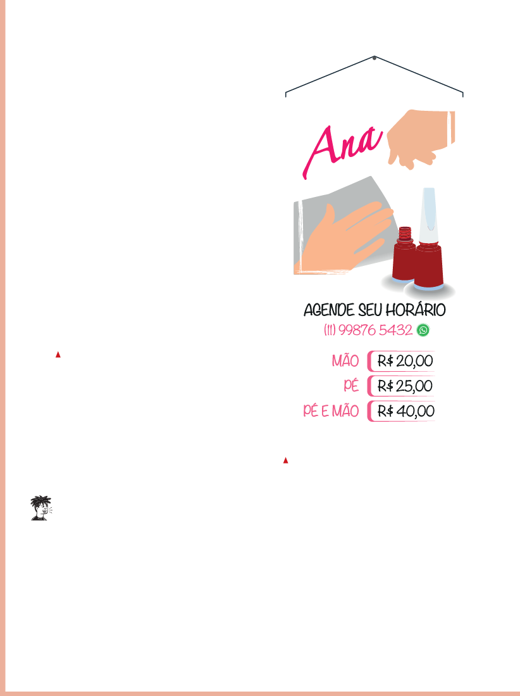

Solicite aos estudantes que analisem as duas imagens, a imagem do uso da trena e a do cartaz da manicure, e verifique se identificam o significado dos números em cada uma delas.
Conforme forem respondendo, faça perguntas para que eles percebam as diferenças na forma de representá-los, por exemplo:
• Como você sabe quais números representam preços?
• O que observou para chegar à essa conclusão?
• Como é possível perceber que o número representa um número de telefone?
• O que os números que aparecem na trena representam?
AS IMAGENS MOSTRAM ALGUNS NÚMEROS SENDO USADOS EM ATIVIDADES RELACIONADAS AO TRABALHO.
Tong_stocker/Shutterstock
A TRENA É USADA PARA FAZER MEDIÇÕES.

Fernando José Ferreira
Ana
AGENDE SEU HORÁRIO
(11) 99876 5432
MÃO
R$ 20,00
PÉ
R$ 25,00
R$ 40,00
PÉ E MÃO
INFORMAÇÕES CONTÊM NÚMEROS COM DIFERENTES SIGNIFICADOS.
PENSE EM OUTRAS ATIVIDADES PROFISSIONAIS QUE USAM NÚMEROS PARA DEFINIR PREÇO, MEDIR OU CONTAR.
E O NÚMERO DE UM TELEFONE? ELE NÃO SERVE PARA MEDIR, CONTAR OU INDICAR PREÇO.
NÚMEROS COMO O DE TELEFONE E O QUE REPRESENTA O CEP (CÓDIGO DE ENDEREÇAMENTO POSTAL) SÃO CÓDIGOS.
VEJA COMO PODEMOS LER O NÚMERO DE UM TELEFONE.
“– Nove, nove, oito, sete, seis, cinco, quatro, três, dois.”
Resposta pessoal.
Tomando por base as profissões de manicure e pedreiro, proponha uma roda de conversa com os estudantes e uma reflexão sobre o ODS 10, que trata da redução das desigualdades.
Explique que muitos trabalhadores exercem sua profissão de forma autônoma, sem vínculo empregatício formal e sem garantias trabalhistas.
Tanto as manicures como os pedreiros enfrentam dificuldades para aumentar sua renda devido à falta de qualificação profissional e oportunidades de ascensão.
Em relação ao ODS 10, a meta do Brasil é aumentar a renda dos 40% menos favorecidos em um ritmo mais rápido do que a renda média dos 10% mais ricos até 2030.
Para efetivamente ajudar os dois profissionais citados no texto é essencial investir em educação, formação profissional e acesso a oportunidades de emprego dignas.
Solicite aos estudantes que pesquisem políticas e programas implementados pelo governo para reduzir essas desigualdades, com destaque para as políticas que promovem a equidade de gênero.